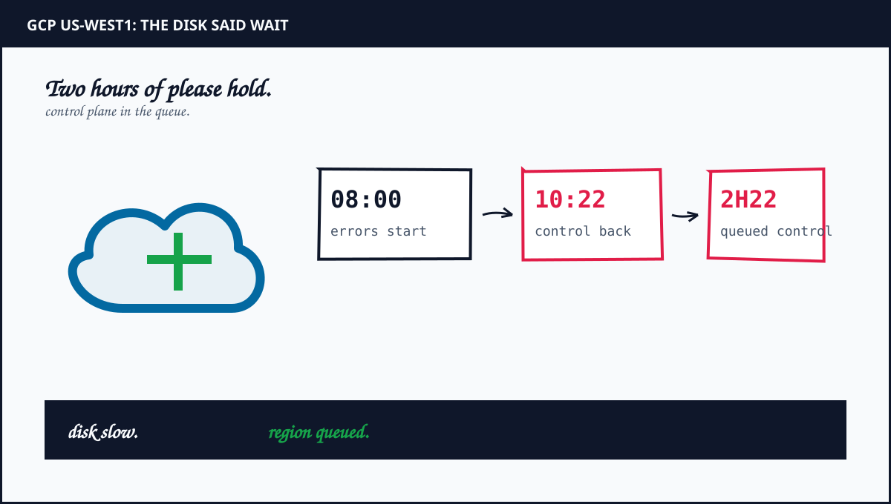
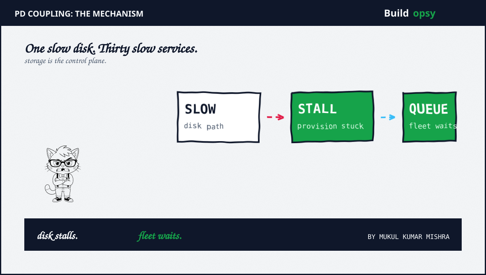
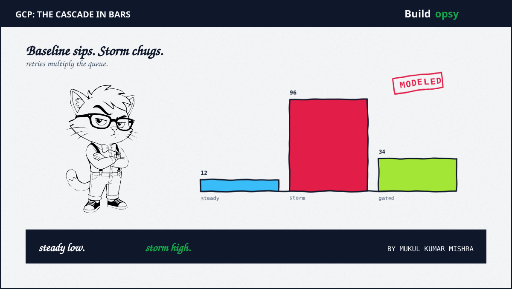
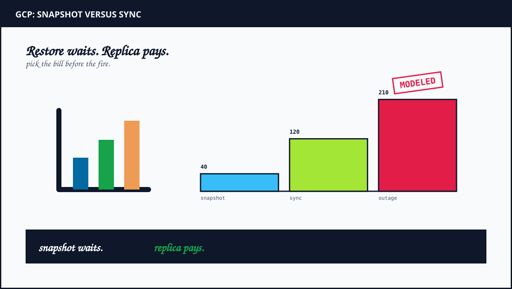

1. The Morning Storage Slowed Down
Oregon woke to timeouts. Compute Engine VM provisioning in zone us-west1-c failed or crawled. Filestore control calls for instance allocation plus validation checks took longer to normalize. Those two sentences from the incident report carry the whole diagnosis. Provisioning is a control plane act. Filestore allocation is a control plane act. Both waited on regional storage backends that had stopped answering quickly.
The affected list reads like a cloud catalog. AlloyDB plus Apigee plus Artifact Registry plus BigQuery plus Build plus Dataflow plus Filestore plus Key Management plus Monitoring plus Run plus PubSub plus SQL plus Storage plus Compute plus GKE plus IAM plus Managed Kafka plus Persistent Disk. Thirty plus names with one shared sentence. Timeouts plus degradations plus elevated latencies across control operations plus data requests.
Two hours twenty two minutes later the same backends recovered plus the fleet followed. Compute provisioning normalized. Filestore locks cleared. Validation checks passed. The incident never needed a second root cause. One slow storage substrate queued every control decision that depended on durable state.
2. Why GKE Stalled With It
Kubernetes scheduling looks stateless from far away. Up close it is a storage workload. The API server persists every object to etcd. The scheduler watches that store. The kubelet attaches PersistentVolumes through the CSI driver before a pod can start. Each step waits on disk with a timeout measured in seconds.
When regional storage backends slow by orders of magnitude, attach calls pile up. Pods sit in Pending. The scheduler retries. The API server writes retry state back to the same slow store. That loop is a feedback amplifier. Control traffic that normally sips from storage starts chugging. The store slows further. Pending grows. Operators who try to reschedule away from trouble add more writes to the queue they want to drain.
IAM completes the coupling. Token validation plus policy checks read from replicated state that itself depends on storage health. New connections cannot authenticate quickly. Old connections keep serving until they need revalidation. The fleet looks half alive. New work starves while old work coasts. That half-alive shape matches the report exactly. Elevated latencies plus provisioning failures plus increased error rates, all at once.

3. The RPS Model
Assume us-west1 normally handles 400,000 control operations per minute across Compute plus GKE plus Run plus Dataflow at the affected hour. That is about 6,700 control RPS plus roughly 850,000 data RPS on storage plus pubsub plus Bigtable paths. Model the storage slowdown as p99 latency rising from 8 milliseconds to 4 seconds, a 500 times cliff on the tail.
Little's Law converts latency into queue. At 6,700 control RPS with 4 second service time, the system needs about 26,800 concurrent slots to avoid queueing. Control planes provision for hundreds of concurrent operations, not tens of thousands. The excess queues instantly. Timeouts fire at 30 seconds. Clients retry with backoff. Retries add offered load without adding goodput. The storm peaks near 8 times baseline offered load before admission control engages.
Gating changes the shape. Assume regional admission control sheds 65 percent of non-critical control calls within 5 minutes plus serves critical attach plus auth calls from reserved headroom. Offered load falls from 8 times to under 3 times baseline. Queues drain as storage recovers. Provisioning normalizes first. Data plane follows. The report order matches this model. Control normalized across backends before dependent services fully recovered.
| Workload | Scenario | Modeled RPS |
|---|---|---|
| Control baseline | steady hour before 08:00 | 6.7k avg |
| Storm offered | timeouts plus retries, no gating | 54k peak |
| Gated offered | 65 pct non-critical shed | 19k peak |
| Data plane | storage plus pubsub plus tables | 850k degraded |

4. What Went Wrong in the Design
Control decisions shared fate with regional storage. Provisioning plus allocation plus validation all blocked on the same backends that served customer data. Control state needs its own disaggregated store with independent latency budgets. Sharing the substrate shares the outage by construction.
No bulkhead separated critical attach calls from background sync. Volume attach plus token validation queued behind analytics plus build plus monitoring writes. Critical path calls need reserved lanes with strict priority. Background sync should shed first under backpressure, automatically.
Zone failure became region failure. Provisioning pain concentrated in us-west1-c, yet the incident covered the region. Cross-zone control dependencies carried the blast outward. Cells should contain zone faults at the zone line. The companion on cell architectures shows the pattern.
Recovery had no precomputed playbook. Normalization took 2h22m with locks plus validation checks trailing. Precomputed drain plus reprovision sequences with standby capacity would have shortened the tail. Recovery speed is a design output, not a morale output.
Storage coupling plus control plane bulkheads plus blast radius cells is where the system design course gets serious. Take Lesson 06 →
5. The Cost Model
Assume a fleet of 2,000 VMs plus 400 GKE nodes in us-west1 with 60 TB of regional PD plus 20 TB of snapshots. Regional PD at a modeled $0.08 per GB per month puts steady storage near $4,800 per month. Snapshots add about $1,000. Compute dominates at roughly $210,000 per month. The storage that caused the outage costs about 2 percent of the bill it can stall.
Price the protection. Synchronous cross-region replication for the critical 10 TB at a modeled $0.16 per GB plus egress puts the replica near $1,600 per month plus transfer. Standby control headroom of 5 percent compute adds about $10,500 per month. Total modeled protection lands near $12,000 per month, about 5 percent of compute, against a 2h22m full-region degradation.
Price the outage. At 850,000 data RPS degraded with 1 percent mapping to billable events worth a modeled $0.02 of margin each, the exposure runs about $170 per second. Over 8,520 seconds the modeled exposure crosses $1.4 million before credits plus support plus churn. Even at one tenth conversion the outage bills near $145,000. Protection at $12,000 per month pays back against one morning.
| Cost center | Modeled monthly | What moves it |
|---|---|---|
| Regional PD plus snapshots | $5.8k | 80 TB at modeled rates |
| Replica plus headroom | $12k | 10 TB sync plus 5 pct compute |
| Storm exposure | $145k plus per morning | conversion plus duration |
| Protection payback | under one incident | replica before fire |
6. The Verdict
Google disclosed the window plus the service list plus the storage cause plainly. Credit belongs there. The architecture still let one slow substrate queue thirty plus services for over two hours. That is the actual postmortem. Shared control storage plus missing bulkheads plus zone-to-region carry plus improvised recovery turned a backend slowdown into a regional morning.
The fix travels with the Azure companion published alongside this piece. Both incidents share one moral through different organs. Azure lost the map. GCP lost the disk. In both cases the control plane shared fate with the failure. Disaggregate control state. Bulkhead critical calls. Cell the blast. Drill the drain. Or schedule the same morning under a different region name. The storage will wait. Customers will not.
Two hours twenty two minutes of queue. One slow backend. Thirty services holding one breath.

Sources and Method
Timeline plus service list plus storage cause follow the Google incident report for us-west1 on Aug 20 2026. RPS plus cost numbers are a labeled scenario model. Architecture advice is at system level, not a reproduction guide.